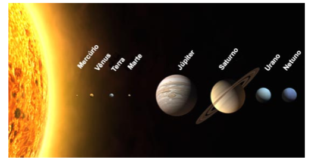
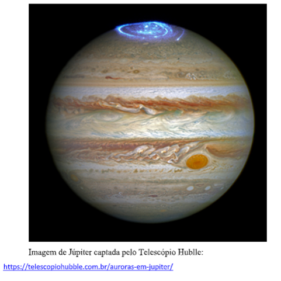
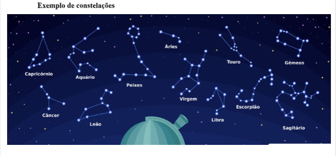
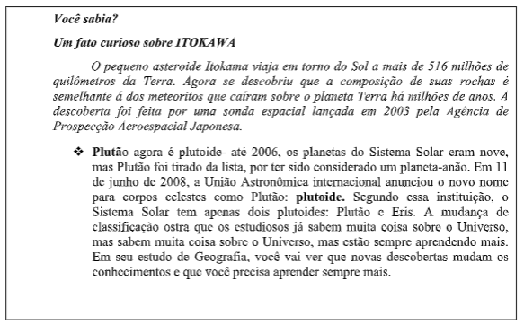
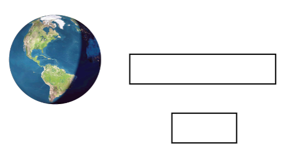
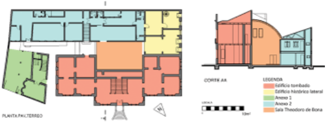
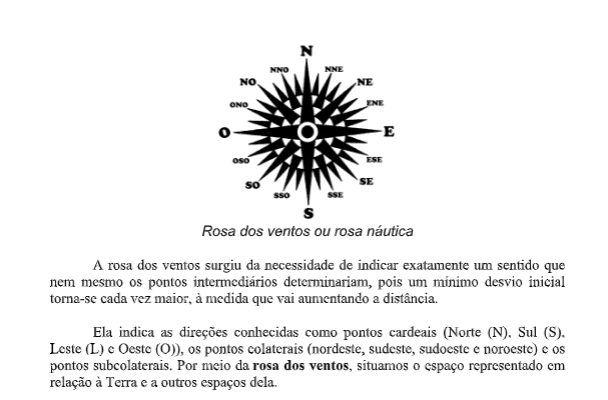
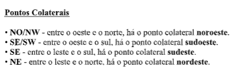
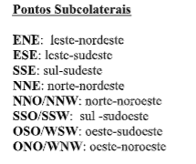
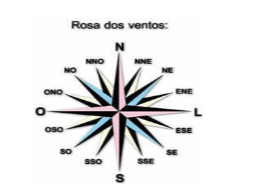

Capítulo 1: O Atividades Econômicas
Questão:Ao longo do capítulo, pense no seguinte: Como a modificação da natureza transformou-se em mecanismo econômico, fez surgir o comércio e a indústria?
Contextualizando – Indústria Metalúrgica e ExtrativismoO Rio Grande do Sul é, juntamente com Santa Catarina, o maior produtor de carvão mineral do Brasil, sendo que a produção estadual beneficiada em 2017 foi da ordem de 2 milhões de toneladas. Atualmente o uso do carvão mineral está ligado a geração termoelétrica e a aplicação industrial para geração de calor (energia térmica) para uso metalúrgico. Na chamada região da Campanha, onde estão localizadas as maiores jazidas de carvão, foram realizadas também pesquisas para o aproveitamento de argilas a elas associadas, mostrando grande potencial de utilização econômica para fabricação de cerâmicas. Em 2017 a produção beneficiada de carvão mineral gerou R$289.312.452. Em relação ao valor total da produção mineral, os 20 maiores municípios produtores em 2017 eram Butiá, Lajeado, Caçapava do Sul, Candiota, Ijuí, Ametista do Sul, Barra Funda, Pantano Grande, Santa Maria, Pelotas, Montenegro, Charqueadas, Itaara, São José do Hortêncio, Gravataí, Capão do Leão, Eldorado do Sul, Portão, Caxias do Sul, Porto Alegre. Estes municípios foram responsáveis por 68% do valor total da produção mineral em 2017 que atingiu R$1.356.615.320,00.
Fonte: https://atlassocioeconomico.rs.gov.br/ocorrencias-minerais
EXTRATIVISMO- ATIVIDADES ECONÔMICAS
Atividades econômicas são todas as atividades necessárias à produção e à circulação das riquezas. Riquezas são todos os elementos que satisfazem as necessidades humanas. As riquezas são, em sua maioria, produzidas pelo trabalho do homem, que se utiliza dos recursos extraídos da natureza.
Extrativismo é a atividade pela qual o homem retira diretamente da natureza os produtos necessários à sua sobrevivência e à produção de riquezas.
Extrativismo é a atividade pela qual o homem retira diretamente da natureza os produtos necessários à sua sobrevivência e à produção de riquezas.
• mineral
• vegetal
• animal
Os minerais são recursos não renováveis (ou seja, não se reproduzem). Os recursos animais e vegetais são renováveis (ou seja, se reproduzem).
Porém, é importante entender que a renovação dos recursos (animais e vegetais) ocorre dentro de certo limite. Quando o desgaste do solo, a poluição das águas, o desmatamento, a caça e a pesca são intensas e não respeitam o ciclo de reprodução dos animais e vegetais, muitas espécies ficam ameaçadas. O extrativismo irracional já provocou a extinção de muitos animais e vegetais.
Vamos pensar geograficamente!1.O que é extrativismo mineral exemplos?
2.O que é extrativismo vegetal e mineral?
3.Quais são as principais áreas de extrativismo mineral no Brasil?
4.O que é a extração mineral?
1. Assinale V (Verdadeiro) ou F (Falso):
 EXTRATIVISMO MINERALO que é extrativismo mineral e qual a diferença entre mineral e minério? Extrativismo mineral é a atividade pela qual se retiram minerais da natureza. Os minerais são elementos ou compostos químicos que são encontrados na crosta terrestre. Minerais são componentes das rochas. Na natureza, normalmente os minerais não se encontram em estado puro, mas associados (junto) a outros minerais.
A parte economicamente aproveitável do mineral é chamada minério.
Observe:

Na crosta terrestre existem milhares de minerais. Alguns são muito utilizados, mas nem todos são explorados pelo homem. Para mais informações, assista:
O processo pelo qual se separam as substâncias indesejadas e purifica- se o mineral, até chegar ao minério, chama-se beneficiamento. O minério cuja exploração econômica não é possível é chamado protominério.
 1.1. OS MINÉRIOS E MINERAIS MAIS EXPLORADOSA) MINERAIS METÁLICOS (MINÉRIOS)
-metais básicos: ferro, cobre, zinco, estanho, chumbo.
-metais de liga: níquel, tungstênio, molibdênio, vanádio, cobalto, cromo, manganês, zircônio, berílio.
-metais leves: alumínio, magnésio.
-metais preciosos: ouro, prata, platina.
-metais radioativos: urânio, rádio.
-metais líquidos: mercúrio.
B) MINERAIS NÃO METÁLICOS
-cristalinos: diamante, rubi, safira, água-marinha, esmeralda, turmalina, granada, zirconita, ametista, quartzo (utilizados na confecção de joias).
-cristalinos: diamante, rubi, safira, água-marinha, esmeralda, turmalina, granada, zirconita, ametista, quartzo (utilizados na confecção de joias).
C) MINERAIS FÓSSEIS OU ENERGÉTICOS
líquido: petróleo sólido: carvão mineral / xisto betuminoso gasoso: gás natural
1.2 A UTILIZAÇÃO DOS MINERAIS
No quadro abaixo estão outros importantes minerais, algumas de suas utilizações e os maiores produtores mundiais.
 Exercícios de Fixação
( ) O ferro é um minério pouco utilizado.
( ) Do cobre e do estanho se produz o bronze.
( ) Do cobre e do estanho se produz o bronze.
( ) O tipo de carvão mais utilizado é a hulha.
( ) O petróleo e o carvão são minerais fósseis.
1.Todas as atividades relacionadas com a produção e a circulação das riquezas são chamadas de:
a) atividades econômicas b) atividades sociais
c) atividades financeiras d) atividades comerciais
 